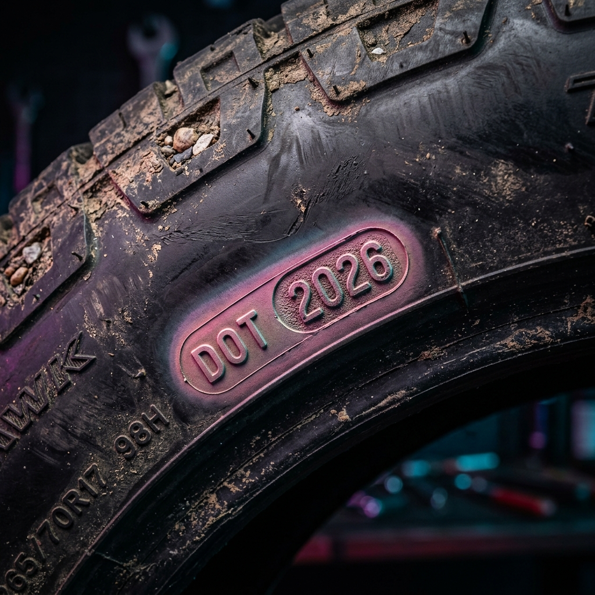

1. The Showroom Deception: Why New Doesn't Mean Flawless
There is a common, expensive assumption shared by almost all new car buyers: "If it is a brand-new car straight from the showroom, it must be in perfect mechanical and cosmetic condition."
As an Automotive Quality and Customer Experience Specialist, I can tell you that this assumption is not only incorrect, but it also frequently leads to post-delivery nightmares. Before a vehicle reaches your hands, it undergoes a long, highly vulnerable logistical journey. It travels hundreds of kilometers on open multi-car transport trailers, is loaded and unloaded repeatedly on metal ramps, sits in unpaved, dusty factory transit depots for weeks, and is finally stored in open dealer yards exposed to scorching heat, acid rain, rodents, and industrial fallout.
During this transition, damages are incredibly common. Bumpers get scraped against trailer rails; doors get nicked by neighboring cars; batteries degrade from deep discharge cycles; and sub-frames scrape over high loading ramps. To make the car ready for display, dealership cleaning staff are instructed to mask these defects. Scratches are filled with quick fillers and masked with heavy wax polishes; mismatched repaints are buffed to a high shine; loose underbody protectors are secured with temporary zip-ties; and warning light codes are temporarily cleared using diagnostic tools.
Dealers often apply heavy coats of glaze wax to fresh deliveries. While this makes the paint look incredibly glossy under bright showroom lights, it is actually designed to fill in and mask paint swirls, transit scratches, and local repaints. After three or four car washes, the wax layer strips away, exposing the underlying transit scratches or paint overspray.
Taking delivery without checking these elements means you legally accept the vehicle "as is." Once you drive off the showroom floor, separating a pre-delivery factory defect from a post-delivery owner accident becomes almost impossible. That is why a comprehensive New Car Delivery Checklist is your only line of defense.
2. The Power of Pre-Registration PDI: Your Legal Leverage
Understanding the timeline of car purchase transactions is vital. A Pre-Delivery Inspection (PDI) must always be performed before registration (RTO tax payment) and before making final payment.
Once RTO road tax is paid and the vehicle is registered, a registration number is permanently linked to its chassis (VIN) in the government database. Legally, the vehicle changes ownership from the manufacturer/dealer to you. At that stage, you cannot reject the car. If you find a major mechanical issue, a repainted panel, or a weak battery post-registration, the dealer is not legally obligated to swap the car; they will simply register a warranty claim, tear open the engine bay or repaint the panel in their workshop, and hand you a repaired car.
By conducting your PDI while the car is still unregistered, you retain absolute leverage. If you detect a repainted panel or a structural issue, you can refuse that specific vehicle and demand that the dealer assign another chassis number from the next transit batch.
This is where independent vehicle auditing becomes essential. A dealer's in-house PDI is a direct conflict of interest. Their goal is to clear stock and sign handovers. Our goal at CARROBAAR_Drive is to audit the car strictly on quality parameters, giving you an unbiased mechanical and aesthetic report.
3. Deciphering the VIN: Checking for Yard Storage Abuse
The very first step of a physical inspection is to verify the vehicle's birth certificate—the Vehicle Identification Number (VIN). The VIN is a unique 17-character alphanumeric code stamped into the vehicle's structural chassis. It is typically found stamped under the driver or co-driver seat frame, on the engine firewall, or visible through a cutout at the bottom edge of the windshield.
Manufacturers code the exact year and month of manufacture into this 17-digit string. Deciphering this code allows you to confirm if you are receiving a fresh vehicle or a "yard queen" that has been sitting rotting in a dealer depot for six to nine months. Stagnant storage yard cars suffer from dried rubber seals, flat-spotted tyres, rust build-up in engine bores, and severely degraded battery chemistry.
| Brand | VIN Position to Inspect | Year Character Decode (2024 - 2026) | Month Character Decode (Jan - Dec) |
|---|---|---|---|
| Maruti Suzuki | 10th Position (Year) & 11th Position (Month) | R = 2024, S = 2025, T = 2026 | A=Jan, B=Feb, C=Mar, D=Apr, E=May, F=Jun, G=Jul, H=Aug, J=Sep, K=Oct, L=Nov, M=Dec |
| Hyundai | 10th Position (Year) & 19th Position (Month) | R = 2024, S = 2025, T = 2026 | A=Jan, B=Feb, C=Mar, D=Apr, E=May, F=Jun, G=Jul, H=Aug, J=Sep, K=Oct, L=Nov, M=Dec |
| Tata Motors | 10th Position (Year) & 12th Position (Month) | R = 2024, S = 2025, T = 2026 | A=Jan, B=Feb, C=Mar, D=Apr, E=May, F=Jun, G=Jul, H=Aug, J=Sep, K=Oct, L=Nov, M=Dec |
| Mahindra | 10th Position (Year) & 12th Position (Month) | R = 2024, S = 2025, T = 2026 | A=Jan, B=Feb, C=Mar, D=Apr, E=May, F=Jun, G=Jul, H=Aug, J=Sep, K=Oct, L=Nov, M=Dec |

Infographic 1: VIN Code Anatomy & Decoding Map
Visual map detailing a 17-digit chassis VIN highlighting character positions for manufacturing year and month code identification.
4. Paint Depth Inspection: Exposing Transit Repaint & Body Fillers
During transport from factory to dealer, panels frequently get scratched, dented, or gouged. Rather than scraping the car or declaring it damaged, dealerships routinely route vehicles to their internal body shops. They hammer out dents, apply polyester putty (bondo), sand it down, spray matching paint, and bake it. This repair is done without your knowledge, and you are sold a repaired car at the price of a brand-new one.
The human eye cannot reliably detect a professional body shop repaint, especially when the paint matching is mixed electronically. The only way to expose this is by using a digital Dry Film Thickness (DFT) Paint Gauge (Paint Meter). Factory paint is applied by highly calibrated electrostatic robots in controlled environments, resulting in an incredibly thin, uniform, and consistent layer.
Hand-repainting at a dealership body shop, however, is applied using pneumatic spray guns. This leaves a much thicker layer of paint and clear coat, and if a dent was repaired, a dense layer of plastic body filler lies underneath.
| Paint Depth Range (Microns) | Status / Diagnosis | Implications & Rationale |
|---|---|---|
| 40 – 70 μm | Internal Structure (Factory Normal) | Engine bay walls, inner door frames, and boot wells are sprayed without a heavy clear coat to save weight and materials. |
| 90 – 140 μm | Factory Finish (Perfect) | Standard paint thickness for external steel panels. Symmetrical readings across all matching sides (e.g., left door matches right door). |
| 180 – 250 μm | Dealer/Transit Repaint (Alert) | Indicates a secondary paint spray without body filler. Usually done to cover up deep scratches or key marks acquired during transit. |
| 350 – 1000+ μm | Accident / Dent Repair (Rejection Hazard) | Indicates structural body filler (bondo) underneath. This panel was dented heavily in a collision and repaired. High risk of rust and cracking. |
During our PDI checks at CARROBAAR_Drive, we scan every body panel at multiple reference points (bonnet, fenders, all doors, pillars, roof, and boot). If we find one door reading 260 microns while the other three doors read 110 microns, we have concrete proof of a dealer repaint. You can use this to reject the chassis or demand compensation.

Infographic 2: Paint depth scanning points and Micron zones
Diagram of a modern sedan illustrating where to position a paint depth meter and contrasting normal factory micron zones with repainted zones.
5. Fluid & Engine Bay Audit: Guarding Against Early Component Wear
Open the bonnet and secure it with the prop rod. The engine bay of a brand-new car should look pristine, but factory and transit errors can cause serious issues.
First, inspect the fluids. Check the engine oil dipstick. The oil must be clean, light amber, and filled between the minimum and maximum indicator notches. If the oil appears dark, blackish, or smells burnt, the vehicle may have been run excessively as a showroom demo car or test vehicle with the odometer disconnected.
Second, check the coolant reservoir. The coolant should be bright green, pink, or blue, filled to the "Max" line. Look closely at the oil cap and coolant reservoir for a milky, frothy "chocolate milk" emulsion. If present, it indicates a blown head gasket allowing oil and coolant to mix—a critical factory assembly defect.
Third, search for fluid leaks. Run a flashlight around the cylinder head seam, radiator hoses, and brake master cylinder. Look for wet spots or dried crusty pink/green residue. A leakage at this stage will only get worse, leading to overheating or brake failure.
6. Battery & Electrical Check: Protecting the Nervous System
Vehicles parked in open dealer yards sit idle for months. Modern cars are packed with telematics, keyless entry modules, and sensors that draw power continuously even when the ignition is switched off. If a car sits for two months without being run, its battery drains completely.
When a lead-acid or AGM battery drops below 11.5 volts, it undergoes sulfation. Chemical crystals form on the battery plates, permanently destroying its capacity to hold a charge. When you purchase the car, the dealer will jump-start it and run it for 10 minutes. It will start, but the battery's lifespan is permanently cut from 4 years to 6 months. Once you drive home, the battery will die, and the dealer will refuse a warranty replacement, blaming your usage.
Use a digital multimeter to check the battery's resting voltage before the engine is started.
- 12.6V to 12.8V: Healthy battery, fully charged.
- 12.0V to 12.4V: Partially discharged, requires a deep charge and load testing.
- Under 11.8V: Severely degraded. The battery cells are likely damaged. Demand a brand-new battery replacement before delivery.
Next, connect an OBD2 scanner (we do this during all CARROBAAR_Drive inspections) to check the Engine Control Unit (ECU) for stored trouble codes. If transit staff jump-started the car incorrectly, they could have shorted the alternator or blown fuses, leaving hidden diagnostic codes stored in the ECU registry.
7. Gaps & Panel Alignment: Looking for Structural Misalignment
Panel gaps are the distances between adjacent body panels (e.g., the gap between the bonnet and the front fender, or the door and the pillar). In a factory-built car, these gaps are set by robotic laser sensors to be perfectly uniform and symmetrical.
Inspect the panel gaps around the car. Walk from one side to the other, comparing the gap widths. If the gap between the bonnet and left fender is 4mm, but the right fender gap is 8mm, the bonnet is misaligned.
Misaligned panel gaps indicate one of two things:
- Factory Quality Control Failure: Slipped past assembly line inspections.
- Transit Accident: The panel was damaged, removed, and poorly reinstalled by dealer workshop mechanics. Check the panel bolts inside the engine bay or door hinge wells. Mismatched bolt paint or chipped bolt heads prove the panel was adjusted post-factory.
8. Glass stamps & Tyres check: Spotting Replaced Parts
Dealership transit depots are busy yards. Vandals, gravel thrown by passing trucks, or internal staff accidents can break windshields, side windows, or puncture tyres. Dealers swap these parts out using local stock, but they often use older tyres or glass panes with mismatched manufacturing dates.
Check the Glass Codes: Every window pane and windshield has an etched manufacturer stamp (e.g., AIS, Saint-Gobain) at the corner. Along with the brand, there is a set of dots and digits representing the year and month of manufacture. All window glass stamps must match or precede the vehicle's manufacture date. If your car was made in May 2026, but the passenger door window has a stamp from October 2024 or September 2026, that glass pane was broken and replaced.
Check Tyre DOT Codes: Every tyre sidewall has a 4-digit Department of Transportation (DOT) code stamped inside an oval window. The first two digits represent the week of manufacture, and the last two represent the year.
For example, a stamp reading "1226" means the tyre was manufactured in the 12th week of 2026. All four tyres (and the spare wheel) should have matching or closely aligned DOT dates that are slightly older than the vehicle's VIN month. If you find a tyre that is two years older or has dry-rot cracks in the tread groove, demand a replacement.

Infographic 3: DOT Tyre Code & Glass Stamp Decoding
Graphic detailing where to find the 4-digit tyre DOT code and the window glass dot stamps, with instructions on how to decode them.
9. Interior & Electronics: Cabin Controls and Comfort Operability
Step inside the cabin. Take off the plastic seat covers (dealers might object, but you cannot inspect seat stitching or fabric tears with plastic covers on).
Verify the following electrical and trim elements:
- Odometer check: Ensure the odometer reads under 50 km (see the Odometer limits table below). If the odometer reads higher or has been disconnected, investigate.
- Climate Control & Vents: Turn the AC to its coldest setting. Let it run for 5 minutes. Check the temperature of the air from all vents. Switch to heating mode to ensure the heater core works. Adjust vent louvers—they are fragile and often broken by transit cleaners.
- Infotainment & Speakers: Test touch responsiveness across the display panel. Pair your phone via Bluetooth/Android Auto. Shift the speaker balance to each of the four corners to verify that no speakers are blown or disconnected. Check the reverse parking camera clarity and guidelines calibration.
- Power Windows & Mirrors: Roll all windows up and down simultaneously. They should slide smoothly without squeaking or binding. Adjust external ORVM adjusters in all four directions.
- Interior Trim & Roofliner: Run your hand along the dashboard joins, glovebox latch, and door pad assemblies. Check the roofliner for water dampness stains (which indicate sunroof seal leakage) or greasy finger marks from technicians.
| Odometer Reading Range | Status Rating | Action Required & Risk Assessment |
|---|---|---|
| 0 – 25 km | Excellent / Normal | Standard distance representing factory quality testing, loading onto transport trucks, and parking in dealer yards. Fully approved. |
| 25 – 50 km | Acceptable / Standard | May indicate travel between a nearby storage yard and the showroom. Check yard logs to verify transit routes. |
| 50 – 100 km | Caution / Alert | High distance for a new delivery. The vehicle may have been driven from an outer town yard or used for customer demo test drives. Inspect tyres for wear. |
| 100+ km | Warning / Reject Limit | Unacceptable for a new car. High likelihood of odometer tempering, joyriding, or extensive dealer demo use. Demand a written explanation or refuse delivery. |
10. Underbody & Sunroof Drainage: Preventing Future Disasters
Underbody Inspection: Crawl underneath the car or ask the dealer to place the vehicle on a service lift. Check the underbody engine cover and protective guards. Look for scrape marks, cracked plastic, or missing push-lock buttons. During carrier unloading, cars with low ground clearance often scrape their bellies, which can crack the oil sump or damage the exhaust system.
Sunroof Water Drainage Pathways: If your vehicle is equipped with a sunroof, check the rubber seal surrounding the glass for gaps. Pour a small cup of water into the sunroof surround channel with the glass open. The water should drain quickly and exit behind the front wheels. If water pools in the channel, the drainage pipes are blocked with yard dust. This will cause water to overflow into the headliner, shorting cabin electronics and staining the roof upholstery during the first rain.
Dealers want to sell cars quickly. Independent quality inspectors have no stake in the transaction. By hiring an independent team like CARROBAAR_Drive, you ensure that every potential defect is flagged objectively, allowing you to negotiate repairs or a vehicle swap before registering the car.
11. Real-World Case Study: Nexon CNG Panel Gap and Cosmetic Defect Corrections
Tata Nexon CNG PDI Defect Discovery
Dealer CorrectedTata Nexon iCNG 2026 (Unregistered, Showroom Yard)
Vadodara Showroom, Gujarat
1. Right fender-to-bonnet gap measured 8.5mm (left side was 4.2mm). 2. Rear tailgate sat unevenly, causing rubbing against the taillight cluster housing. 3. Local paint touch-up detected on LH rear door with paint depth reading 235 microns (average panel read was 110 microns).
Water ingress into the tail-lamp cluster could short the wiring loom, and panel rubbing would eventually strip the paint, causing rust. The repainted door panel would reduce the car's resale value by 15% later on.
We flagged these issues before registration. The dealer's workshop team adjusted the hood hinges and tailgate buffers, correcting the alignment. For the paint repaint, the dealer offered a free deep interior cleaning package and ceramic wax coating to settle the issue. Registration proceeded only after corrections were verified.
12. Actionable New Car PDI Checklist
Use this interactive checklist during your showroom inspection. Check off each item as you verify it.
15-Step New Car PDI Checklist
Click to check off verified elements. Ensure all are checked before registration.
- Verify Odometer is under 50 km (check for disconnected cluster cables).
- Decode VIN chassis number to confirm manufacture month and year.
- Scan external body panels with a paint depth meter for transit resprays (90-140μm normal).
- Check panel gaps and flushness around the hood, doors, and boot for symmetry.
- Inspect engine oil level, coolant density, brake fluid, and look for active leaks.
- Check battery resting voltage (should be 12.6V+) and test start cranking power.
- Cross-check manufacturing date stamps on all glass panes against the VIN.
- Verify 4-digit tyre DOT week/year stamps and inspect tread for storage flat-spots.
- Test all cabin electronics, switches, power windows, and central locking functions.
- Verify touchscreen responses, speakers balance, reverse camera, and steering controls.
- Inspect seat stitching, dashboard fit, door pads, and look for water stains on the roofliner.
- Test all exterior lights (headlights, DRLs, turn signals) and check for moisture condensation.
- Verify sunroof operations and pour water in channels to check drainage pathways.
- Inspect underbody engine undercover protection panels and frame for scrapes or missing clips.
- Conduct a pre-registration test drive to check wheel alignment, brake feel, and suspension noise.
Understanding the Real Cost of Post-Delivery Defects
Many buyers assume that since a new car comes with a manufacturer's warranty, finding defects after delivery is not a big deal. However, this is a costly mistake. Dealerships routinely reject claims for paint damage, alignment issues, battery degradation, and missing body trim once you drive off the lot. They will argue that these issues occurred after you took delivery.
| Defect Type | Pre-Registration PDI Catch Cost | Post-Delivery Repair Cost (Out of Pocket) | Warranty Coverage Status |
|---|---|---|---|
| Transit Panel Scrap / Repaint | ₹0 (Dealer corrects or swaps car) | ₹5,000 – ₹12,000 (plus 20% resale value drop) | Denied (Dealers claim scratch happened post-delivery) |
| Weak Battery (Stratified Cells) | ₹0 (Dealer swaps battery) | ₹5,500 – ₹14,000 (Replacement battery cost) | Difficult (Warranty claims often denied if yard negligence isn't proven) |
| Missing Underbody Cover Fasteners | ₹0 (Dealer fits buttons) | ₹8,000 – ₹22,000 (If shield drops and hits oil sump) | Denied (Attributed to road debris damage) |
| Sunroof Drain Blockage & Water Damage | ₹0 (Dealer clears channel) | ₹15,000 – ₹45,000 (Upholstery clean & shorted ECU modules) | Partial (Electrical components covered, interior damage denied) |
New Car PDI FAQs
Ensure Your New Car is Flawless Before Signing
Avoid showroom surprises, transit damages, and repainted panels. Book an independent New Car PDI with CARROBAAR_Drive today. Our mechanical engineers will scan your vehicle with paint gauges and diagnostic scanners to ensure peace of mind.